Kartabend · Nutzerhandbuch
Version 53 · 27. November 2026
Vom ersten Anmelden bis zum gemeinsamen Kartabend. Die Screenshots zeigen Beispiel- und Testdaten. Die Anmeldeansicht wurde für Version 53 mit anonymen Testdaten aufgenommen. Andere Bilder illustrieren unveränderte Bereiche. Eine Prüfung auf echten Geräten steht aus.
Schnellstart
- Anmelden und bei Bedarf das eigene Profil ergänzen.
- Über + einen Raum sofort eröffnen oder einen Termin als Anfrage planen.
- Mitspieler einladen, Teams speichern und Ergebnisse eintragen.
1 · Anmelden und registrieren
- Öffne die App und melde dich mit Benutzername und Passwort an. Die Groß-/Kleinschreibung des Anmeldenamens ist unerheblich.
- Über das Augensymbol kannst du das Passwort kurz anzeigen. Gib es ausschließlich in der App ein und teile es nicht mit anderen.
- Für ein neues Konto öffnest du „Registrieren“. Benutzername, Vorname, E-Mail und Passwort sind erforderlich. Das Passwort muss mindestens zwölf Zeichen haben.
- Bestätige deine E-Mail, falls die App dich dazu auffordert. Nachname, Ortschaft und Geschlecht sind für normale Kartabende freiwillig. Für Turnierzugang müssen sie ergänzt werden.
- Bei Anmeldeproblemen nutze „Passwort vergessen / bisheriges Konto übernehmen“. Prüfe auch Spamordner und die angegebene E-Mail-Adresse.
- Vor „Konto erstellen“ erreichst du die Datenschutzerklärung. Die Bestätigungsmail verlinkt zusätzlich die Onlinefassung und eine PDF mit dem damaligen Versionsstand. Die E-Mail-Bestätigung ist keine Zustimmung zur Zuschauerfreigabe.
- Wenn der Anmeldedienst nicht geladen werden konnte, lade die App bei bestehender Internetverbindung neu. Die Anmeldebibliothek wird mit der App ausgeliefert; ihre eigene Versionsnummer ist unabhängig von der App-Version.
Die App richtet sich an Volljährige ab 18 Jahren. Die Oberfläche führt keine amtliche Altersprüfung durch.

2 · Räume, Anfragen und Archiv
- Nach der Anmeldung öffnet sich die Raumübersicht. „Aktive Räume“ zeigt deine zugänglichen normalen Räume und Turniertische.
- „Anfragen“ zeigt geplante Kartabende. Die frühere Anfrage-Auswahl im Dropdown ist entfallen. Das Suchfeld hilft in allen drei Ansichten.
- Unter „Archiv“ findest du beendete Räume sowie archivierte Anfragen, an denen du beteiligt bist. Ein Raumersteller kann einen Raum wieder öffnen oder nach Bestätigung löschen.
- Ein Pfeil führt in den Raum. Das separate Sprechblasensymbol öffnet den Chat für bestätigte Teilnehmer.
- Normale Räume werden nach mehr als vier Stunden ohne Aktivität archiviert. Die Daten einschließlich einer unvollständigen Partie bleiben dabei erhalten.
- Die Karten zeigen ihre Art am Symbol: Pokal für Turniertische, Spielkarten für normale Räume, Fragezeichen für Kartabendanfragen.
- Nach dem Umwandeln einer Anfrage wird der aktive Raum geöffnet. Die alte Anfrage erscheint nicht zusätzlich im Archiv. Ein neuer Kartabend über + startet aus dem Archiv automatisch in der aktiven Ansicht.
Zugewiesene Turniertische stehen oben und haben einen roten Rahmen. Private Räume anderer Personen werden dadurch nicht öffentlich. Die untere Hauptnavigation bleibt beim Scrollen am Bildschirmrand. Bei Kartabendanfragen können auch 21 rückwärts und Krawallo als Spielwunsch gewählt werden. Die feste Menüleiste bleibt auch auf schmalen Android-/Chromium-Ansichten am unteren Rand.
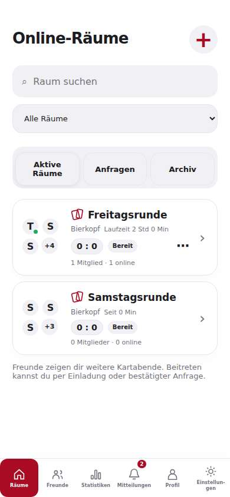
3 · Einen Kartabend planen
- Tippe in der Raumübersicht oben auf +. Wähle „Kartabendanfrage mit Termin“, um Datum, Uhrzeit und Ort festzulegen. Für sofortiges Spielen wählst du stattdessen einen Online-Raum.
- Trage einen Titel, Datum, Uhrzeit und Ort ein. Die Zeitzone steht im Formular. Eine genaue Adresse ist freiwillig; eine Karte wird erst nach ausdrücklichem Antippen geladen.
- Wähle die gewünschten Spiele. Eine reine Schleifer-Anfrage braucht sechs Zusagen, andere Anfragen vier. Der Ersteller zählt mit. Schafkopf ist derzeit nur ein Spielwunsch.
- Mit „Kartabendanfrage erstellen“ speichern. Danach wechselt die App automatisch zu „Anfragen“, wo du deinen eigenen Termin siehst.
- Nicht blockierte Freunde erhalten eine Mitteilung. Für Handy-Push gilt die separate Auswahl „Neue Kartabendanfragen von Freunden“.
Die Tabletaufnahme zeigt Datums- und Zeitfelder innerhalb ihrer Kachel. Die native Kalenderdarstellung kann je nach Gerät abweichen.
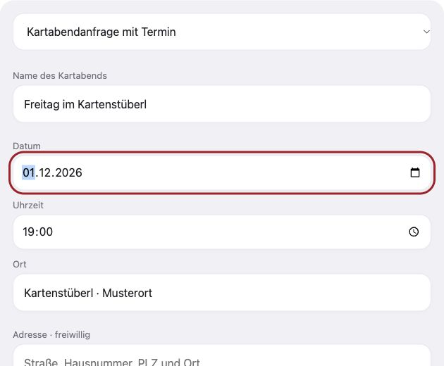
4 · Zusagen und Sichtbarkeit
- Hellblau bedeutet: Es fehlen noch bestätigte Spieler. Grün bedeutet: Die erforderliche Anzahl ist erreicht.
- Öffne eine Anfrage über den Pfeil. Interessierte angemeldete Nutzer können ihre Teilnahme anfragen; der Ersteller nimmt unter „Mitteilungen“ an oder lehnt ab.
- Der Ersteller kann zusätzliche Spieler bis insgesamt 32 erlauben. Überzählige Zusagen werden durch späteres Abschalten nicht stillschweigend entfernt.
- Unter „Einstellungen“ lässt sich die Sichtbarkeit auf Freunde beschränken. Der Ersteller sieht die eigene Anfrage immer. Vom Ersteller blockierte Nutzer sehen sie nicht. Bereits bestätigte Teilnehmer behalten ihren bisherigen Zugang.
- Der Ersteller kann vor Ablauf die Anfrage in einen normalen Raum umwandeln. Voll besetzte Anfragen öffnen ab ihrem Termin automatisch einen Raum. Nicht umgewandelte Anfragen werden vier Stunden nach Beginn archiviert.
Bis zum Ablauf der vier Stunden können fehlende Zusagen noch beantwortet werden. Die Vier-Stunden-Inaktivität normaler Räume ist eine andere Regel.

5 · Bierkopf im Online-Raum
- Unter „Spieler“ wählst du die Teilnehmer für die beiden Teams aus. Tippe auf die Profilbilder und anschließend auf „Teams speichern“. Ein Spieler kann nicht in beiden Teams stehen.
- Bei Bierkopf spielen zwei Zweierteams. Teams werden für jede Spielart getrennt gespeichert. Registrierte Nutzer lassen sich hier weder umbenennen noch mit einem anderen Profilbild versehen.
- Wähle im Spiel das gewinnende Team, „Schneider frei“, „Schneider“ oder „Durch“ und anschließend die Ansage. Prüfe die Punktvorschau vor „Partie eintragen“.
- Bierkopf endet bei 21 Punkten. Bestätige den Partieabschluss und starte über „Nächste Partie“ neu. Die Rundentabelle zeigt den Spielstandsverlauf.
- Die Kopfleiste bleibt beim Scrollen sichtbar. Bei einem versehentlichen Eintrag lässt sich die letzte Runde zurücknehmen.
- Letzte Partie zurücknehmen öffnet eine Sicherheitsabfrage. Nein oder Schließen verändert nichts; erst Ja nimmt den letzten Ergebniseintrag mit seinen Punkten zurück. Bereits abgeschlossene normale Partien bleiben geschützt.
- Nach der letzten Runde bleibt Letzte Partie zurücknehmen verfügbar. Nach Bestätigung wird genau der letzte Eintrag entfernt und die abgeschlossene Partie wieder geöffnet.
Bei normalen Räumen führt „Räume“ unten zurück zur Übersicht. Ein Abbruch betrifft nur die laufende Partie; abgeschlossene Ergebnisse bleiben bestehen.
6 · Schleifer mit Dreierteams
- Wähle „Schleifer“. Unter „Spieler“ werden zwei Teams mit je drei Spielern zusammengestellt und gespeichert.
- Die Buttons 0, 1, 2, 3 ergeben zunächst 1, 2, 3, 4 Punkte. „Schneider frei“ addiert 0, „Schneider“ 1 und „Durch“ 2 Punkte.
- Der gewählte Ansagenmultiplikator bleibt wirksam. „Madusa“ wird wie in der App angezeigt als fester 12-Punkte-Wert behandelt.
- Prüfe die Vorschau und trage die Runde ein. Schleifer endet spätestens bei 31 Punkten; die letzte Wertung wird auf das Ziel begrenzt.
- Spielerlogos, aktuelle Punkte, Partie und Siege bleiben in der oberen Leiste sichtbar. Auf schmalen Geräten werden die Logos passend kleiner, ohne den Spielstand auszublenden.
- Letzte Partie zurücknehmen öffnet eine Sicherheitsabfrage. Nein oder Schließen verändert nichts; erst Ja nimmt den letzten Ergebniseintrag mit seinen Punkten zurück. Bereits abgeschlossene normale Partien bleiben geschützt.
- Auch nach dem Abschluss kann der letzte Eintrag nach Bestätigung zurückgenommen werden. Die Partie wird dadurch wieder geöffnet.
Beispiel: Schleifer 2, Schneider und Kontra ergeben (3 + 1) × 2 = 8 Punkte, soweit bis 31 noch so viele Punkte fehlen.
7 · Schniffelkopf erfassen
- Wähle „Schniffelkopf“ und stelle vor dem ersten Eintrag die Spielerauswahl zusammen. Während einer laufenden Partie wird die Auswahl ausgeblendet.
- In der Kreuztabelle auf das freie Feld des aktuellen Spielers für die gewünschte Kategorie tippen. Das Zahlenfenster startet mit 0; gib mit dem Nummernblock 0 bis 120 ein und bestätige.
- Spielkategorie und Punkte werden direkt über die Tabelle erfasst. Die bisherige untere Kategorie-/Punkteauswahl entfällt.
- Unterhalb der Erfassung stehen die aktuellen Runden mit Spielstandsverlauf, Schreiber und Dauer. „Letzte Partie zurücknehmen“ korrigiert den jüngsten Eintrag.
- Nach allen Kategorien wird die Partie automatisch abgeschlossen und archiviert. Danach kannst du eine neue Partie beginnen.
- Letzte Partie zurücknehmen verlangt Ja oder Nein. Nach dem Abschluss entfernt es den letzten Ergebniseintrag, nimmt die Partie aus der abgeschlossenen Statistik und öffnet sie wieder.
- Nach dem letzten Eintrag öffnet sich automatisch das Ergebnisfenster. Die Buttons x3, x5 und x10 bedeuten 3, 5 oder 10 Cent je Differenzpunkt zum ersten Platz.
- Beispiel: 500 Punkte auf Platz 1 und 100 eigene Punkte ergeben 400 Punkte Abstand. Bei x3 zahlt dieser Spieler 12,00 Euro, bei x5 20,00 Euro und bei x10 40,00 Euro.
- Jeder Spieler sieht seinen Betrag. Die Gesamtsumme erhalten die Erstplatzierten; bei Gleichstand wird sie gleichmäßig aufgeteilt. Unteilbare Restcents werden in der angezeigten Reihenfolge verteilt und im Fenster erklärt.
- Das Fenster kannst du nach dem Schließen über Ergebnis & Ausgleich erneut öffnen. Die Auswahl berechnet nur die Anzeige und ändert keine Punkte.
Bei vielen Teilnehmern kann die obere Spielerleiste seitlich gescrollt werden. Eine Rundeneingabe und eine abgeschlossene Partie sind unterschiedliche Zählgrößen. Die Abrechnung wird lokal aus den Ergebnissen berechnet. Die App überweist kein Geld und speichert keine Forderungen. Größere Profilbilder in der dauerhaften Ergebnisleiste passen sich deren Breite an. Profilbild und Name stehen zentriert über der jeweiligen Punktespalte.
8 · Klopfer erfassen
- Vor dem ersten Eintrag vier bis acht Spieler auswählen.
- In jeder Spielerzeile eine Stichzahl wählen. Standard ist 0. Bei vier Spielern gibt es 0–7, bei fünf 0–6, bei sechs 0–5, bei sieben 0–4 und bei acht 0–3. Je Person ist genau eine Zahl rot eingefärbt; eine neue Auswahl ersetzt die vorherige.
- Für jeden Spieler Richtig oder Falsch auswählen. Ohne diese Bestätigung wird nicht gespeichert. Richtig ergibt 5 Punkte plus die Stichzahl, Falsch ergibt 0 Punkte.
- Die Summe aller Stichangaben soll bei vier Spielern 7, bei fünf 6, bei sechs 5, bei sieben 4 und bei acht 3 ergeben. Bei Abweichung warnt die App mit Ja/Nein. Nur Ja speichert die Ausnahme.
- Partie speichern erfasst alle Spieler gemeinsam. Ab 51 Punkten endet die Partie; Ergebnis und Verlauf bleiben sichtbar.
- Auch nach dem Abschluss kann Letzte Partie zurücknehmen nach Ja/Nein den letzten Eintrag entfernen und die Partie wieder öffnen.
In Kartabendanfragen heißt diese Spielauswahl teilweise „Klopfen“. Die Punkteerfassung in der App ist als „Klopfer“ bezeichnet. Die Profilbilder in der dauerhaften Ergebnisleiste skalieren mit der verfügbaren Breite; bei vielen Spielern lässt sich die Leiste seitlich scrollen. Profilbild und Name stehen zentriert über der jeweiligen Punktespalte.
9 · Freunde, Mitteilungen und Chat
- Unter „Freunde“ findest du registrierte Nutzer und kannst eine Freundschaft anfragen. Erst nach Bestätigung ist die Verbindung hergestellt.
- „Mitteilungen“ trennt Nachrichten von Anfragen. Hier beantwortest du Freundschafts-, Raum- und Kartabendanfragen.
- Nachrichten können per Wischgeste entfernt werden. Eine Raum- oder Freundschaftsanfrage bestätigst du über die beschrifteten Aktionen.
- Im Raumchat können nur bestätigte Teilnehmer schreiben. Nachrichten sind maximal 160 Zeichen lang. Eigene Nachrichten lassen sich nach Bestätigung löschen; fremde Nachrichten kann nur ihr Schreiber löschen.
- Für Reaktionen halte eine Nachricht gedrückt. Der Chat nutzt Ende-zu-Ende-Verschlüsselung. Archivierbare Anfrage-Chats bleiben lesbar; neue Beiträge sind dort gesperrt.
- Der Betreiber Kolsbernd erhält bei einem neu registrierten und bestätigten Konto eine Mitteilung. Wiederholte Anmeldungen und Profiländerungen lösen keine neue Registrierungsmeldung aus. Bei aktivierten Handybenachrichtigungen erscheint zusätzlich eine neutrale Push-Meldung.
Geräteschlüssel bleiben im Browser. Lösche Website-Daten nicht unüberlegt. Die Gerätefreigabe für alte Verläufe ist derzeit in der Oberfläche ausgeblendet; eine Übernahme auf ein neues Gerät lässt sich dort momentan nicht einrichten.
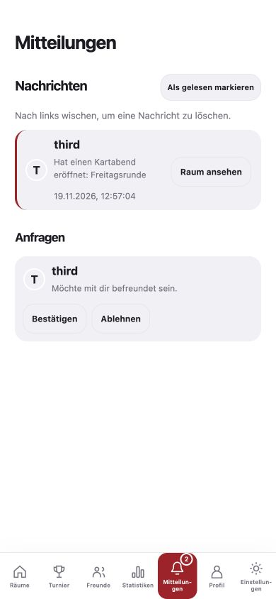
10 · Profil und persönliche Daten
- Öffne Profil im unteren Menü. Profil bearbeiten erlaubt Änderungen an deinen eigenen Daten und deinem Foto.
- Punkte zählen alle tatsächlich erzielten Punkte abgeschlossener Partien, auch bei einer Niederlage. Bei 12:21 erhältst du 12 Punkte.
- Nettopunkte werden ausschließlich bei Bierkopf und Schleifer berechnet: eigene Punkte minus Gegnerpunkte. Bei 12:21 sind es −9. Bei Einzelspielen steht dafür ein Strich.
- Die Tabelle enthält jede Spielart einschließlich Schafkopf. Die Zeile Gesamt summiert Partien, Siege und Punkte. Die gesamte Nettosumme enthält nur Teamspiele.
- Ergebnisse aus Turnieren zählen ebenfalls zu deinem registrierten Profil. Löscht der Ersteller ein archiviertes Turnier, bleiben deine persönlichen Ergebnisse erhalten; Gäste werden nicht dauerhaft in Profilstatistiken übernommen.
- Die eigene Statistik kannst du nach Bestätigung neu zählen lassen. Gemeinsame Raumstände bleiben erhalten. Abmelden steht unter der Tabelle.
- Im Menü Freunde auf das Profilbild eines bestätigten Freundes tippen, um dessen Spielstatistik mit Punkten, Nettopunkten und Gesamtsumme zu sehen. Kontaktangaben und private Profildaten werden dabei nicht angezeigt. Blockierte Nutzer haben keinen Zugriff.
Siegquoten werden aus der jeweiligen Summe berechnet. Unterschiedliche Spiele verwenden verschiedene Punkteskalen; die Gesamtsumme ist eine Übersicht und kein fairer Vergleich unterschiedlicher Spielarten.
11 · Ranglisten und Raum-Einstellungen
- Die Statistik in der Raumübersicht enthält appweite Tabellen. Filtere nach Spielart und Zeitraum, um vergleichbare Ergebnisse zu sehen.
- Ranglisten innerhalb eines Raumes betreffen diesen Raum. Die Historie zeigt frühere Partien und ihre Verläufe.
- Unter „Raum-Einstellungen → QR-Code zum Beitreten“ erstellst du eine Einladung. Im QR-Fenster kannst du den Link kopieren. Wer eingeladen wird, meldet sich mit seinem eigenen Konto an und tritt dem freigegebenen Raum bei.
- „Raumstatistiken zurücksetzen“ betrifft nach Sicherheitsabfrage nur diesen Raum. Erstelleraktionen wie Import, Wiederherstellung oder Löschen sind besonders geschützt.
- Ein archivierter normaler Raum kann vom Ersteller wieder geöffnet werden. Endgültiges Löschen ist eine getrennte Aktion mit Bestätigung.
Die Werte verschiedener Spiele sind nicht unmittelbar vergleichbar. Achte beim Lesen einer Rangliste auf Spielart, Zeitraum und Anzahl der Partien.
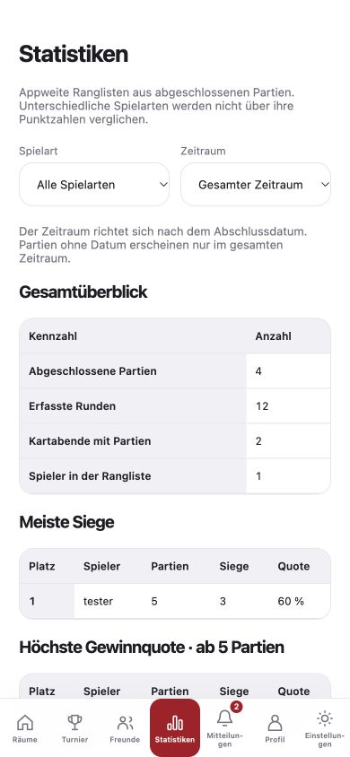
12 · Turniere und QR-Codes
- Freigeschaltete Ersteller bereiten über + ein eigenes Turnier vor. Turniername, Spiel, Partien und Runden werden vor dem Start festgelegt.
- Gäste werden vor Turnierstart im jeweiligen Turnier verwaltet. Laufende Turniere bieten stattdessen Tischübersicht. Vier Spieler stehen nebeneinander; Ortschaften sieht nur der Ersteller.
- Tisch öffnen führt direkt zur Ergebniserfassung. Ein fremder, nicht zugeteilter Tisch zeigt eine Meldung statt eines Zugangs.
- Bisherige Partien und Runden öffnet den Verlauf. Der Button ist so breit wie Tisch öffnen. Fertige Tischkarten sind aufklappbar.
- Die nächste Turnierrunde startet der Ersteller, sobald alle Tische fertig sind. Nur er beendet oder bricht das Turnier ab.
- Zuschauer-QR und Erfassungs-QR haben getrennte Rechte. Der Erfasser gelangt nur zum betreffenden Tisch. Jede Rücknahme verlangt Ja oder Nein.
- Im Turnierarchiv kann der jeweilige Ersteller nach links über eine Turnierkarte wischen. Löschen öffnet eine Sicherheitsfrage. Erst Ja entfernt Turnier, Tische und Verläufe endgültig.
- Persönliche Ergebnisse registrierter Spieler bleiben nach dem Löschen erhalten. Gästestatistiken und die Tischverläufe verschwinden mit dem Turnier. Fremde Turniere kannst du nicht löschen.
- Vor dem Start über Turniereinstellungen bearbeiten ein freiwilliges Turnierlogo wählen. PNG, JPEG oder WebP bis 5 MB werden lokal verkleinert. Erst Einstellungen speichern übernimmt das Logo; Logo entfernen löscht es aus der Auswahl.
- In Ranglisten stehen Startnummern in einer eigenen Spalte. Bei Team-Paaren sind beide Startnummern aufgeführt. Namen enthalten kein #-Präfix.
- Turnier abbrechen steht ganz unten, über die volle Breite. Die Bestätigung bleibt erforderlich. Im Archiv erscheint Löschen erst nach einem Wischen nach links; alternativ kann der fokussierte Turniereintrag mit der Entf-Taste gelöscht werden.
- Ein hinterlegtes Turnierlogo erscheint auch am geöffneten Bierkopf- oder Schafkopftisch. Ohne eigenes Logo wird das Kartabendlogo verwendet. Beim Verlassen wird das normale App-Logo wiederhergestellt.
- Ein fertig gespielter Tisch lässt sich weiterhin öffnen. Letzte Partie zurücknehmen ist möglich, solange das Turnier läuft und die nächste Turnierrunde noch nicht gestartet wurde. Bereits archivierte Turniere bleiben geschützt.
Turnierrechte kommen vom Server. Zugewiesene Teilnehmer bedienen ihren eigenen Tisch; nur der jeweilige Ersteller verwaltet sein Turnier. Im Archiv bleiben die freigegebenen Turnierstatistiken wie bisher sichtbar.
13 · Ansicht, Push und Hilfe
- Unter „Einstellungen“ wählst du die helle oder dunkle Ansicht. Hier steuerst du auch, ob deine Kartabendanfragen nur Freunde sehen dürfen.
- Handybenachrichtigungen werden hier getrennt für Freundschaftsanfragen, neue Räume von Freunden und neue Kartabendanfragen von Freunden gewählt. Mit „Auswahl speichern“ wird die Geräteauswahl übernommen. Auf dem iPhone die App zuvor zum Home-Bildschirm hinzufügen.
- Erlaube Benachrichtigungen auf dem Gerät. Sperrbildschirm, Fokusmodus und Kennzeichen werden zusätzlich in den Systemeinstellungen des Handys gesteuert.
- Weiter unten findest du das Nutzerhandbuch, Datenschutz und Über die App. Öffne das gewünschte Dokument; sein Fenster enthält den PDF-Download und einen einzigen Zurück-Button.
- Im eingeblendeten Dokumentfenster führt „Zurück zur App“ jederzeit zurück. Die PDF-Seiten enthalten zusätzlich einen Link zur App.
- Die aktuelle App-Version steht rechts oben in der Kachel „Über die App“. Gib diese Nummer bei einer Fehlermeldung an.
- Im Raum findest du unter Raum-Einstellungen die Schafkopfeinstellungen. Nur der Ersteller wählt die erlaubten Spiele und eine optionale Farberfassung; die Auswahl gilt für die nächste Partie.
Bei Darstellungsproblemen zuerst vollständig neu laden. Anhaltende Fehler mit Spielart, Gerät und genauer Meldung an den Betreiber melden; niemals Passwort, geheime QR-Codes oder fremde Telefonnummern mitsenden. Ergebnis- und Punktebuttons markieren die aktive Auswahl in allen Spielen mit Rot und weißer Schrift. Die grüne Profilmarkierung bei der Spielerauswahl bleibt bestehen.
14 · Verwaltung und Rücksetzen
- Die Kachel „App-Verwaltung“ ist ausschließlich für das freigegebene Konto Kolsbernd sichtbar. Die Berechtigung wird auch auf dem Server geprüft. Die Kachel steht zwischen Datenschutz und Über die App.
- „Alle Statistiken zurücksetzen“ betrifft die gesamte App: Gesamtstatistik, alle persönlichen Nutzerstatistiken, gespeicherte Ergebnisse, Raumstände und Rundenverläufe. Räume und Chats bleiben erhalten. Turniere gehen mit geleerten ersten Tischen in die Vorbereitung zurück.
- „App vollständig zurücksetzen“ löscht Räume, Gäste, Chats, Kartabendanfragen, Turniere, Mitteilungen und Statistiken. Registrierte Konten, Profile und Freundschaften bleiben erhalten.
- Beide Aktionen verlangen zwei getrennte Ja-/Nein-Abfragen. Ein Nein in einer der Abfragen bricht ab. Nach zwei Minuten muss eine angefangene Bestätigung neu begonnen werden.
- Nach dem Reset laden angemeldete Geräte die App beim nächsten Datenabgleich neu. Anmeldungen bleiben bestehen.
- Die Bestätigungen wählen lediglich die spätere Löschaktion aus. Ein App-Update und die Installation einer korrigierten Funktion lösen selbst keinen Reset aus.
- Fehlerprotokoll anzeigen öffnet eine Tabelle mit Fehlercode, Bereich, Version, Häufigkeit sowie erstem und letztem Zeitpunkt. Nur Kolsbernd kann diese Tabelle abrufen.
- Es werden keine vollständigen Fehlermeldungen, Chattexte oder Zugangsdaten protokolliert. Technische Zusammenfassungen werden für die letzten 30 Kalendertage angezeigt. Vor Anmeldung oder ohne Verbindung bleiben höchstens 20 bereinigte Fehlergruppen bis zu sieben Tage lokal gespeichert.
- Das Fehlerprotokoll erklärt die gespeicherten Codes. Eine abgewiesene Serverregel oder ein Netzabbruch ist nicht automatisch ein Programmfehler. Beim Melden eines Problems helfen App-Version, Spielart, Schritt und Uhrzeit; keine Passwörter oder privaten Chattexte mitsenden.
Ein Reset ist endgültig. Eine Sicherung sollte vorher außerhalb der App gesichert werden. Die Installation einer neuen Version führt selbst keinen Reset aus.
15 · Zuschauer und Beitritt per QR
- Öffne im normalen Online-Raum unten „Raum-Einstellungen“. „QR-Code zum Beitreten“ erstellt eine private Einladung für sieben Tage. Der Empfänger meldet sich mit einem eigenen Konto an.
- Der Ersteller erzeugt den Zuschauer-Code. Ohne Anmeldung sind nur Spielstände und Verläufe lesbar. Namen, Bilder und Schreiberangaben erscheinen nur bei eigener Freigabe; sonst Anonym und ohne Bild. Gäste bleiben ohne Namensfreigabe.
- Beim ersten Betreten eines Raums oder Tischs erscheint eine freiwillige Ja-/Nein-Auswahl. Nein verhindert weder Beitritt noch Mitspielen. Ergebnisse können trotz maskierter Namen in kleinen Gruppen zuordenbar sein.
- Solange der Raum geöffnet ist, bleibt derselbe Zuschauer-Code gültig. „Zuschauer-Code erneuern“ sperrt ihn nach Bestätigung sofort. Beenden sperrt ihn ebenfalls; nach Wiederöffnung wird ein neuer Code erstellt.
- Die Zuschaueransicht aktualisiert sich automatisch. Sie enthält keine Eingabefunktionen. Nach dem Entzug kann bereits Gesehenes oder ein gespeichertes Bildschirmfoto nicht zurückgerufen werden.
Zuschauer-Code und Beitritts-Code sind unterschiedliche Berechtigungen. Niemals einen Beitritts-Code öffentlich veröffentlichen, wenn nur Zuschauen beabsichtigt ist.

16 · Freiwillige Zuschauerfreigabe
- Lies beim ersten Betreten die Erklärung „Ergebnisse mit Namen teilen?“. Über „Datenschutz lesen“ erreichst du die vollständigen Hinweise, ohne die Entscheidung zu verlieren.
- „Ja“ erlaubt die zusätzliche Anzeige deiner Namen und Bilder gegenüber externen Zuschauern mit dem QR-Link. „Nein“ lässt dich genauso mitspielen; im öffentlichen Ergebnis steht dann Anonym ohne Profilbild.
- Deine Entscheidung wird für diesen Raum oder Tisch mit Textversion und Zeitpunkt auf dem Server gespeichert. Bereits vorhandene Einträge werden bei neuen Zuschauerabrufen nach der aktuellen Auswahl gefiltert.
- Unter „Raum-Einstellungen → Zuschauerfreigabe ändern“ kannst du erneut wählen. An Turniertischen steht die Auswahl unter Tischstatistik. Unter „Einstellungen → Zuschauerfreigaben“ lassen sich sämtliche eigenen Freigaben widerrufen, auch für frühere Räume.
- Beim Beenden und Wiederöffnen eines Raums wird erneut gefragt. Eine verweigerte Freigabe für einen Raum gilt nicht automatisch als Zustimmung an einem anderen Tisch.
Anonym ist eine Anzeige, keine Garantie vollständiger Anonymität. Andere Mitspieler können Ergebnisse eventuell zuordnen. Die Auswahl ersetzt keine Rechtsgrundlage für sämtliche App-Daten und holt keine bereits angefertigten Kopien zurück. Meldet die App eine fehlgeschlagene Speicherung, ist auch ein Widerruf noch nicht bestätigt; bitte mit Internetverbindung erneut versuchen.
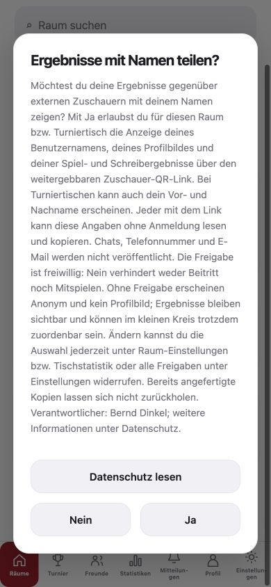
17 · Schafkopf im Turnier
- Bei der Turniererstellung oder vor dem Start unter „Turniereinstellungen bearbeiten“ Schafkopf wählen. Die Vorgabe springt auf 32 Partien je Runde und zwei Runden. Bei Bierkopf lautet sie drei Partien und drei Runden. Bestehende Werte werden beim Öffnen nicht ungefragt geändert.
- Wähle King, Solo, Wenz, Geier, Sau, Kreuzspiel und bei Bedarf Tout als erlaubte Möglichkeiten. Ramsch ist nicht enthalten. Eine Schafkopf-Partie entspricht einem gespeicherten Eintrag; das Turnier endet nicht aufgrund einer bestimmten Siegzahl.
- Stelle vier Spieler in der Reihenfolge ihrer Plätze zusammen. Die dauerhaft sichtbare Leiste zeigt Platznummer, Logo, Namen und persönliche Gesamtpunkte. Tischstart und Partie stehen darunter.
- Bei King, Solo, Wenz und Geier wählst du den Alleinspieler und danach Gewonnen oder Verloren. Gewonnen: 6 Punkte für den Alleinspieler; verloren: jeweils 2 Punkte für die drei anderen. Mit Tout sind es 12 beziehungsweise jeweils 4 Punkte. Es gibt keine Minuspunkte.
- Beim Sauspiel markierst du genau die zwei Gewinner direkt an ihren Logos. Nur sie bekommen je 1 Punkt bei Schneider frei, je 2 bei Schneider oder je 3 bei Durch. Eine zusätzliche Gewonnen-/Verloren-Auswahl gibt es bei Sau nicht.
- Auch bei Kreuzspiel markierst du beide Gewinner direkt. Zulässig bleiben Platz 1 + 3 oder Platz 2 + 4. Die zwei Gewinner bekommen je 1, 2 oder 3 Punkte. Die Gewinnerlogos werden grün eingerahmt. Spiel, Ergebnis und Tout-Auswahl werden rot markiert.
- „Tout“ hat eine eigene Kategorie mit Ja/Nein. Vor dem Speichern wird ein Tout per Pop-up bestätigt. Erst nach erfolgreicher Speicherung bekommt der Turnierersteller unter Mitteilungen die Angaben zum Spieler, Tisch und gespielten Spiel. Wird der Eintrag zurückgenommen, verschwindet auch die zugehörige Tout-Mitteilung. Eine gesonderte Handy-Push-Meldung wird dafür nicht ausgelöst.
- Prüfe die Vorschau für Platz 1–4 und speichere „Punkte eintragen“. Der Server berechnet und prüft die Punkte. Nach der eingestellten Anzahl ist der Tisch fertig. Der Verlauf nennt Spiel, Punkte, Schreiber und Dauer. Die Statistik wird innerhalb des Turniers pro Spieler geführt. Auch Letzte Partie zurücknehmen benötigt eine Bestätigung mit Ja oder Nein.
- Vor Turnierstart kann der Ersteller Farben erfassen aktivieren. Dann muss bei jeder Schafkopf-Erfassung Eichel, Gras, Herz oder Schellen gewählt werden. Ohne diese Einstellung erscheint keine zusätzliche Farbauswahl.
- Die erfasste Farbe steht im Partieverlauf. Farbenstatistiken am Tisch und im Turnier zählen Partien und vergebene Punkte je Farbe. Eine Rücknahme entfernt auch diese Wertung. Die Farbe verändert die Punkteverteilung nicht.
- Schafkopf erlaubt bis zu 50 Partien je Runde und 50 Runden. In der Tischansicht und Tischübersicht steht der Fortschritt, zum Beispiel 13 von 32 Spielen.
- Die Darstellung der Schafkopf-Erfassung folgt der normalen Raumansicht; im Turnier ist die Spielart fest vorgegeben.
Kartensymbole folgen den Eichel-Motiven der Vorlage. Die gewählte Farbe verändert die Punkte nicht. Nur der Turnierersteller sieht Ortschaften; Zuschauer sehen Namen nur nach Freigabe.
18 · 21 rückwärts
- 21 rückwärts in der Spielauswahl öffnen. Eine gemeinsame Kachel enthält Spielerfassung, Aktuelle Runden und Spieler auswählen – genau in dieser Reihenfolge. Vor dem ersten Eintrag mindestens zwei Spieler wählen; jeder startet mit 21 Punkten.
- Farbe über das Kartenlogo wählen. Bei Eichel müssen alle mitspielen. Bei Gras, Herz und Schellen kannst du einzelne Spieler mit X nur für diesen Eintrag aussetzen lassen. Die ausgewählte Farbe wird rot eingefärbt.
- Pro Spieler 0 bis 5 Stiche wählen; Standard ist 0. Pro Stich sinkt der Stand um 1, bei Herz um 2. Die gewählte Stichzahl ist ebenfalls rot eingefärbt.
- Wer aktiv bleibt und 0 Stiche hat, steigt um 5 Punkte; bei Herz sind es 10. Ausgestiegene Spieler behalten ihren Stand. Alle Spieler gleichzeitig auszusetzen ist nicht zulässig.
- Vor dem Speichern werden die Stiche der mitspielenden Personen addiert. Erwartet sind insgesamt 5. Bei Abweichung zeigt Ja/Nein die tatsächliche Summe; Nein speichert nichts, Ja speichert die ausdrücklich bestätigte Ausnahme.
- Sobald jemand 0 oder weniger Punkte erreicht, endet das Gesamtspiel und zeigt das Ergebnis. Der niedrigste Reststand gewinnt; Gleichstände teilen den Sieg.
- Neue Partie beginnt wieder mit 21 Punkten. Nach jedem Eintrag werden Aussetzen und Stichwahl für den nächsten Eintrag zurückgesetzt. Auch der abschließende Eintrag kann nach Bestätigung zurückgenommen werden.
- Nach dem ersten gespeicherten Eintrag verschwinden Spielartauswahl und Spieler auswählen. Nach Abschluss oder Rücknahme bis auf null Einträge erscheinen sie wieder. Nach dem Abschluss zeigt die Spielerauswahl die bisherigen Mitspieler zunächst unveränderlich; Neue Partie öffnet die Auswahl für den nächsten Durchgang.
In übergreifenden Statistiken werden die erzielten Fortschrittspunkte als 21 minus Endstand gezählt. Zusatzpunkte durch Nullstiche können den Fortschritt verringern. Nettopunkte bleiben ausschließlich Teamspielen vorbehalten.
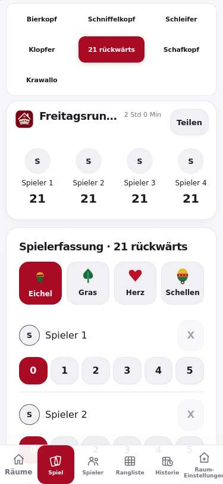
19 · Schafkopf im Online-Raum
- Schafkopf in der Spielauswahl öffnen. Spieler auswählen steht im Rahmen Ergebnis erfassen. Genau vier Personen in Platzreihenfolge wählen; die Platznummer bleibt auch auf markierten Spielern lesbar.
- Der Raumersteller kann unter Raum-Einstellungen die Spiele King, Solo, Wenz, Geier, Sau, Kreuzspiel, Bettel und Tout sowie Farben erfassen einstellen. Die Auswahl wird gespeichert und gilt für die nächste Partie. Farben erfassen bleibt die letzte Spieloption.
- Erfassung und reine Pluswertung entsprechen dem Turnier. Bei Sau genau zwei Gewinner wählen; bei Kreuzspiel gilt Platz 1 + 3 gegen 2 + 4.
- Solo, King, Wenz und Geier geben dem Gewinner 6 Punkte, mit Tout 12. Bei verlorenem Alleinspiel erhalten die drei Gegenspieler jeweils 2 beziehungsweise 4 Punkte. Sau/Kreuzspiel geben beiden Gewinnern jeweils 1, 2 oder 3 Punkte.
- Bettel: Den Gewinner auswählen. Schneider frei gibt 1 Punkt, Schneider 2 und Durch 3 Punkte für diese Person. Tout ist bei Bettel nicht auswählbar.
- Letzte Partie zurücknehmen ist nach Bestätigung auch nach dem Abschluss möglich. Ergebnisse und Verläufe erscheinen in Raum- und persönlichen Statistiken.
- Unter Raum-Einstellungen wählt der Ersteller vor Beginn 1 bis 50 Partien für die Schafkopf-Serie. Während einer laufenden Serie bleiben Spieler und Vorgabe fest. Nach der letzten Partie wird die Serie abgeschlossen; die letzte Partie lässt sich nach Bestätigung zurücknehmen. Jede einzelne Partie zählt in der Statistik. Eine neue ausdrücklich konfigurierte Serie beginnt wieder bei null Punkten.
Im Raum wird ein bestätigtes Tout im Verlauf dokumentiert; die besondere Turnier-Mitteilung bleibt auf Turniere beschränkt.
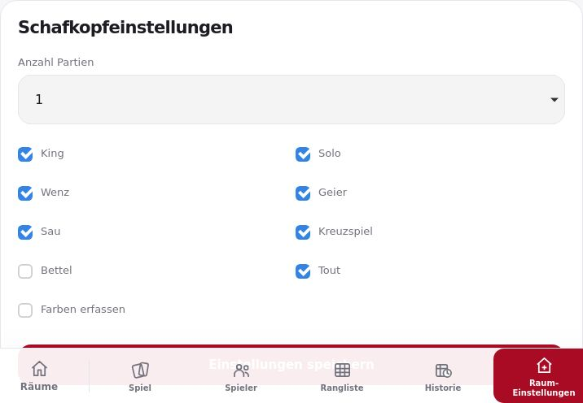
20 · Live-Ergebnisse auf dem Fernseher
- Rechts oben neben dem Raumtitel auf Teilen tippen. Nur der Raum- oder Turnierersteller darf Live-Ergebnisse freigeben.
- Fernseher auswählen · Google Cast öffnet nach vollständiger Betreiber-Einrichtung die Geräteauswahl des unterstützten Browsers. Handy und Cast-fähiger Fernseher beziehungsweise Empfänger müssen im selben WLAN sein.
- Solange keine registrierte Cast-App-ID hinterlegt ist, zeigt die App Einrichtung erforderlich. In diesem Zustand wird kein Google-Skript geladen und keine funktionierende Geräteauswahl behauptet.
- Die eigene Empfänger-Webseite erhält nur einen getrennten, ausschließlich lesenden und höchstens 24 Stunden gültigen Zuschauerzugang. App-Anmeldedaten werden nicht übertragen. Bestehende Freigaben und Anonymisierung gelten weiter.
- TV-Freigabe beenden sperrt diesen Zugang. Das Handy kann bei einer tatsächlich eingerichteten Cast-Verbindung unabhängig weiterbenutzt werden. Der Stop-Button bleibt nach erneutem App-Aufruf erreichbar.
- AirPlay aus der Web-App bietet nur den Hinweis zur iPhone-Bildschirmspiegelung. Diese spiegelt auch andere Apps. Eine eigenständige AirPlay-Geräteauswahl für den Spielstand benötigt eine native iPhone-Erweiterung und ist hier noch nicht aktiv.
Die Cast-Integration ist vorbereitet, aber ohne Cast-App-Registrierung noch nicht betriebsbereit und nicht an einem Fernseher abgenommen. TV-Links werden im Teilen-Menü nicht mehr angeboten. Multi View und Rückkehr zum Fernsehprogramm steuert die TV-Fernbedienung; Verfügbarkeit hängt von Modell und Quellen ab.
21 · Krawallo
- Im Online-Raum Krawallo wählen. Im Menü Spieler unter Teams konfigurieren je zwei Personen markieren und Teams speichern wählen. Wie bei Bierkopf und Schleifer werden Änderungen erst mit diesem Button übernommen. Auf Handys stehen die Teams untereinander; auf größeren Bildschirmen nebeneinander. Ein gewählter Spieler verschwindet aus der Auswahl des anderen Teams. Die laufende Partie sperrt Teamänderungen.
- Unter Spiel auswählen: Solo, King, Geier, Wenz oder Flatterer. Die Buttons verwenden die vorhandenen Schniffelkopf-Logos. Eine Farbauswahl gibt es nicht.
- Ansage ist optional. Ohne Auswahl gilt das Grundspiel. Schneider angesagt, Schwarz angesagt, Tout oder Aufsteher lassen sich einzeln markieren; erneutes Antippen hebt die gewählte Ansage auf.
- Geschossen ist eine Einzelauswahl: Ohne ×1, Kontra ×2, Re ×4 oder Sub ×8.
- Spielergebnis: Schneider frei, Schneider oder Durch. Beim Grundspiel gelten 4, 5 oder 6 Punkte. Schneider angesagt gibt 6 Punkte mit Schneider beziehungsweise 7 mit Durch. Schwarz angesagt gibt 8, Tout 12 Punkte. Der gewählte Schuss vervielfacht die Punkte. Verloren ist bei jeder Ansage verfügbar: Dann erhält das gegnerische Team den angezeigten Wert.
- Aufsteher beendet die Partie sofort zugunsten des Gewinnerteams (bei Verloren das gegnerische Team). Er wird mit 31 Punkten ohne zusätzlichen Schuss erfasst und muss bestätigt werden. Tout muss ebenfalls bestätigt werden.
- Ab 31 Punkten erscheint das Ergebnisfenster. Neue Partie startet bei 0:0. Teams für die nächste Partie lassen sich unter Spieler vorbereiten. Letzte Partie zurücknehmen bleibt nach Bestätigung möglich. Das Ergebnisfenster zeigt auch die Profilbilder des Gewinnerteams.
- Die Spielstandsanzeige zeigt vier getrennte Profilbilder. Lange Namen werden einzeilig gekürzt; die vollständigen Namen bleiben als Bildbeschriftung beziehungsweise im Spielerbereich verfügbar.
Die kompakte Erfassung orientiert sich an Schleifer. Punkte und Nettopunkte zählen für beide Teammitglieder. Bereits gespeicherte Ergebnisse bleiben unverändert; ältere Farbangaben und die frühere Bezeichnung Schwarz können im historischen Datensatz erhalten bleiben.
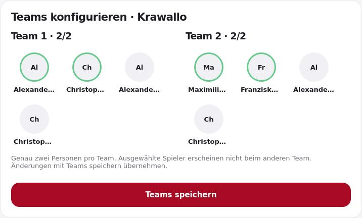
22 · Schafkopf (€) als Testansicht
- Kolsbernd und das freigeschaltete Konto Yannik sehen im Online-Raum den zusätzlichen Eintrag Schafkopf (€). Wie bei anderen Spielarten ist die Auswahl während einer laufenden Partie gesperrt. Die Freigabe wird vor dem Öffnen erneut geprüft. Yannik erhält dadurch keine App-Verwaltungs- oder Rücksetzrechte.
- Die Ansicht ist ein abgetrennter Dummy mit vier anonymen Testspielern. Sie übernimmt weder Profile noch Raumstände. Zurück zur App oder Escape schließt die Testansicht; beim nächsten Öffnen beginnt sie neu.
- Unter Einstellungen findest du die Spiele, ihre Punkte als Orientierung und die editierbaren Eurobeträge. Nur der Betrag beeinflusst die Geldwertung. Das i-Symbol erklärt die jeweilige Regel. Nicht freigegebene Spiele sind ausgegraut. Ramsch und Kreuzspiel sind Alternativen.
- Wähle zuerst den Spieler und dann das Spiel. Bei Sau und Kreuzspiel werden zwei Spieler markiert; für Kreuzspiel gilt Platz 1 + 3 gegen 2 + 4. Danach folgen die jeweils passenden Kategorien: Spitzen, Spielergebnis, Tout & Light, Ausgang, Ansage und Leger. Die Spielbuttons verwenden die freigegebenen Kartenmotive: King den Eichel-König, Wenz den Eichel-Unter, Geier den Eichel-Ober; Solo zeigt vier Ober, Sau vier Asse und Spitz vier Neuner im Fächer. Bagga zeigt Eichel-Ober und Schellen 9, Bettel die Eichel 9.
- Spitzen sind mehrfach wählbar. A = Eichel, B = Gras, C = Herz, D = Schellen. King zeigt die Könige, Solo und Geier die Ober, Wenz die Unter. A, AB, ABC, ABCD, CD und D verändern nur den Grundbetrag. Bei 0,20 Euro ergibt das 0,20 / 0,30 / 0,35 / 0,40 / 0,35 / 0,40 Euro. Andere Kombinationen lassen den Grundbetrag unverändert. Bei Sau, Kreuzspiel, Ramsch, Bagga, Bettel, Spitz sowie Light werden Spitzen ausgeblendet und nicht berechnet.
- Tout & Light hat die Auswahl Nein, Tout und Light, soweit freigegeben. Beide sind Alternativen; bei Tout oder Light entfällt Spielergebnis einschließlich aller Schneider-/Durch-Zuschläge. Tout und Light verdoppeln den Grundspielwert; beim Bettel zählt Tout stattdessen das 1,5-Fache. Bettel und Bagga bieten kein Light. Ohne Tout/Light addiert Schneider den Zuschlag; Durch addiert Schneider und Durch. Ansage und Leger multiplizieren anschließend. Leger 1–4 bedeuten ×2 / ×4 / ×8 / ×16; erneutes Antippen hebt die Wahl auf. Bei Spitz, Bagga und Bettel entfällt Spielergebnis vollständig: Schneider und Durch werden bei diesen Spielen nicht zusätzlich berechnet. Bietet die Sonderauswahl nur Nein und Tout, heißt die Kategorie Tout. Die Ansagen heißen kurz Ohne, Kontra, Re und Sub; ihre Faktoren bleiben ×1, ×2, ×4 und ×8. Leger startet ohne Markierung.
- Es wird nicht gerundet. Auch Centbruchteile bleiben in Berechnung und Testbilanz exakt, beispielsweise 0,175 Euro. Beim Alleinspiel zahlt jeder Gegner den Spielwert; bei einer Niederlage zahlt der Alleinspieler an jeden Gegner. Bei Teamspielen erhalten beide Gewinner je einen Spielwert von den Verlierern.
- Ramsch ist zunächst ausgeschaltet und hat 0,10 Euro als Vorgabe. Wähle den Verlierer und Verloren, damit er an die anderen drei zahlt. Mit Gewonnen wird der Alleingewinn mit 120 Augen gerechnet. Jungfrauen mit 0 Augen markierst du über ihre Profilbilder; der grüne Rahmen kennzeichnet die Auswahl. Diese Empfänger erhalten beim normalen Ramsch doppelt. Bei 120 Augen entfällt die Jungfrau-Verdopplung. Klopfer 1–4 multiplizieren mit ×2 / ×4 / ×8 / ×16 zusätzlich zu Legern und Ansage. Nur eine Klopferstufe ist wählbar; erneutes Antippen hebt sie auf.
- Testpartie eintragen ergänzt nur den vorübergehenden Testverlauf. Die vier Salden oben zeigen die ausgerechneten Testbeträge. Letzte Testpartie zurücknehmen verlangt Ja oder Nein. Echte Partien, Profile, Ranglisten, Einladungen und Zuschaueransichten bleiben unverändert.
Dies ist ein erster Bedien- und Rechendummy. Er führt keine Zahlungen aus und speichert keine Geldbeträge im Raum oder auf dem Server. Für echte gemeinsame Geldspielstände ist ein gesonderter, serverseitig geprüfter Ausbau erforderlich. Die Bilder zeigen anonyme Testdaten; echte Geräte wurden nicht separat abgenommen.
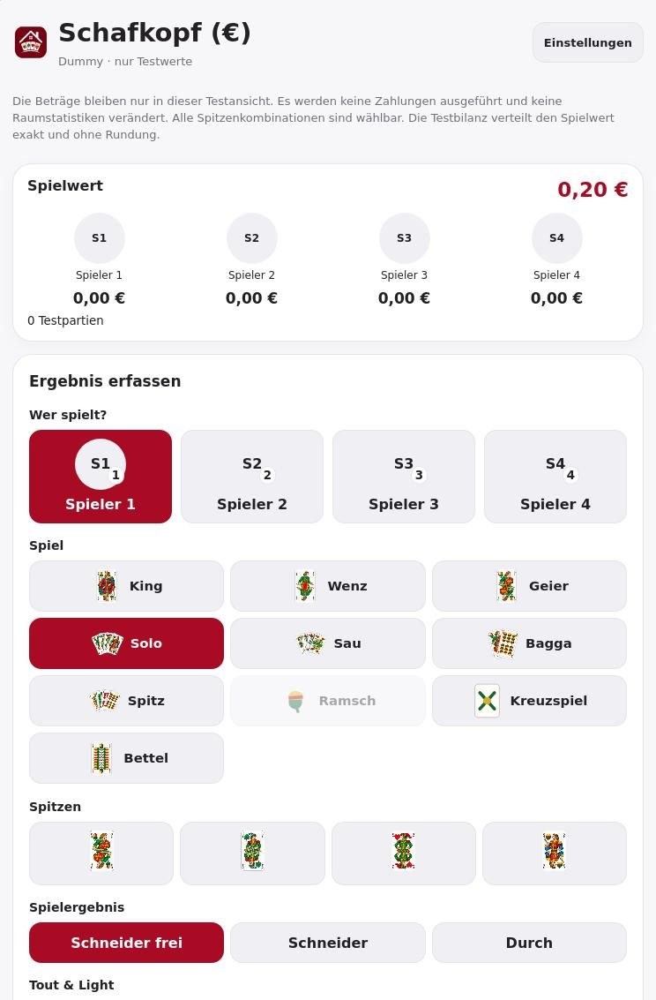
23 · Euro-Dummy konfigurieren
- Einstellungen oben rechts öffnet diese Tabelle. Häkchen geben Spiele und Optionen frei; das i-Symbol erklärt die Regel. Ramsch und Kreuzspiel sind Alternativen.
- Beträge sind mit Komma oder Punkt editierbar: King/Wenz/Geier/Solo 0,20 Euro; Sau/Kreuzspiel 0,05 Euro; Bagga 0,30 Euro; Spitz 0,40 Euro; Ramsch 0,10 Euro; Bettel 0,15 Euro. Schneider und Durch addieren je 0,05 Euro. Die Punkte dienen hier nur zur Orientierung.
- Einstellungen speichern übernimmt deine Auswahl im Dummy. Zurück verwirft ungespeicherte Änderungen. Das Schließen des gesamten Dummys verwirft alle Testwerte. Reguläre Raumeinstellungen bleiben unverändert.
Ramsch und Kreuzspiel stehen direkt untereinander und sind gegenseitig ausgeschlossen. Bettel-Tout zählt ×1,5. Die Konfiguration gilt nur für diese geöffnete Testansicht; Centbruchteile bleiben exakt.
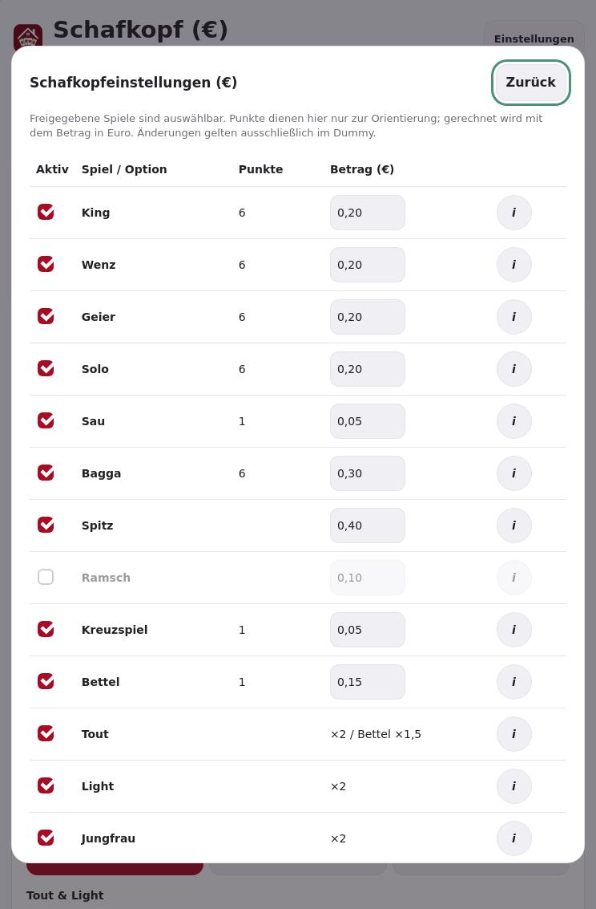
24 · Ramsch im Euro-Dummy
- Ramsch in den Einstellungen aktivieren. Dadurch wird Kreuzspiel ausgeschaltet. Danach Einstellungen speichern wählen.
- Klopfer ist eine Einzelauswahl von 1 bis 4. Ohne Markierung gilt ×1. Die gewählte Stufe kann durch erneutes Antippen zurückgenommen werden. Leger und Ansage bleiben unabhängig davon einstellbar.
- Bei Verloren die Jungfrauen mit 0 Augen über ihre Profilbilder markieren. Die Auswahl erhält einen grünen Rahmen. Eigene Testbeträge und Verteilung werden vor dem Eintragen angezeigt.
Die Ansicht verwendet ausschließlich anonyme Testspieler und schreibt keine Raum- oder Profildaten.
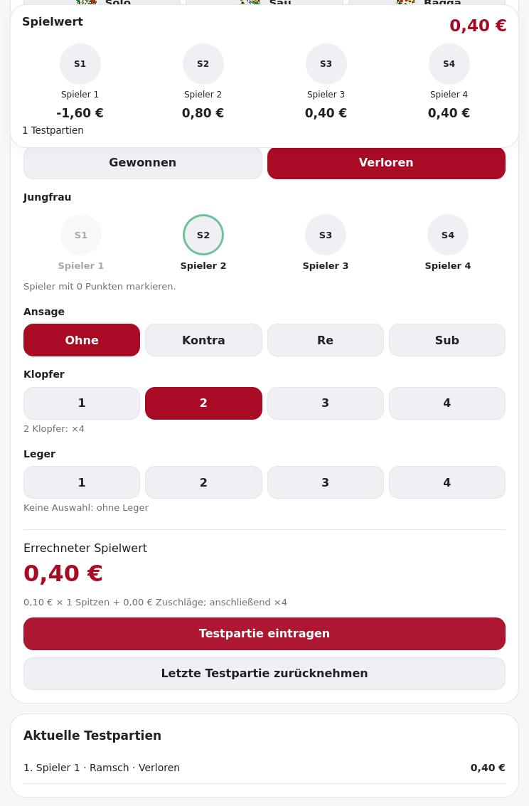